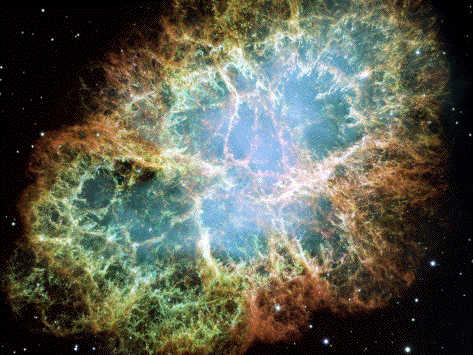

The Crab Nebula is the remnant of the 1054 supernova. Its diameter is 5.6 light years, and it is 6500 light years from earth. At its center is a plusar, a spinning neutron star, the remnant of the supernova. (NASA photo)